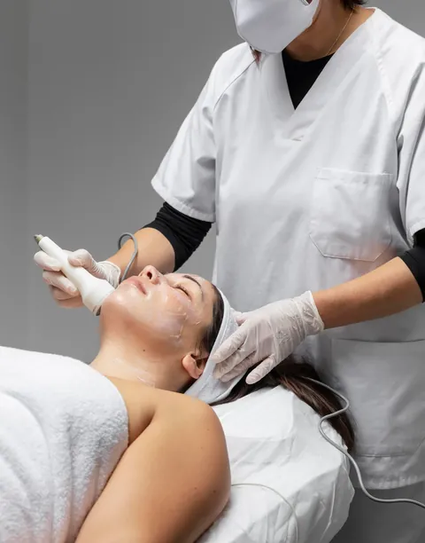
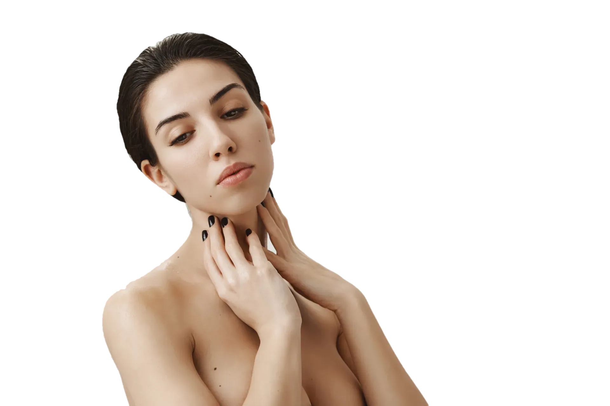
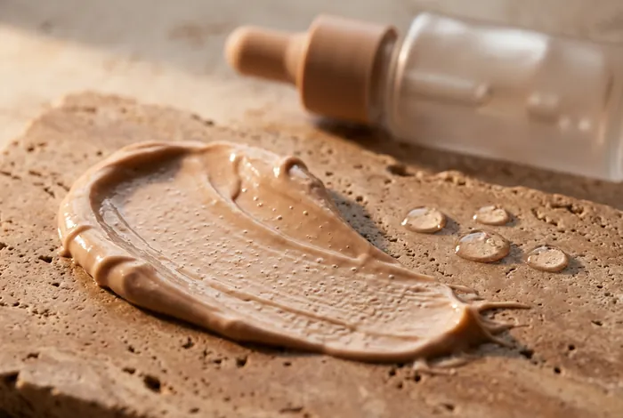
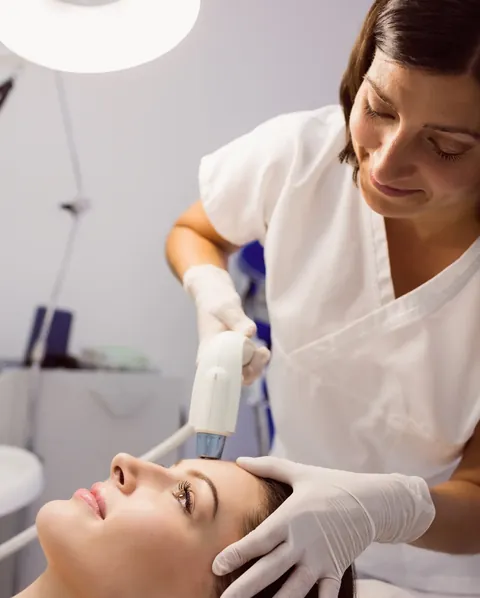
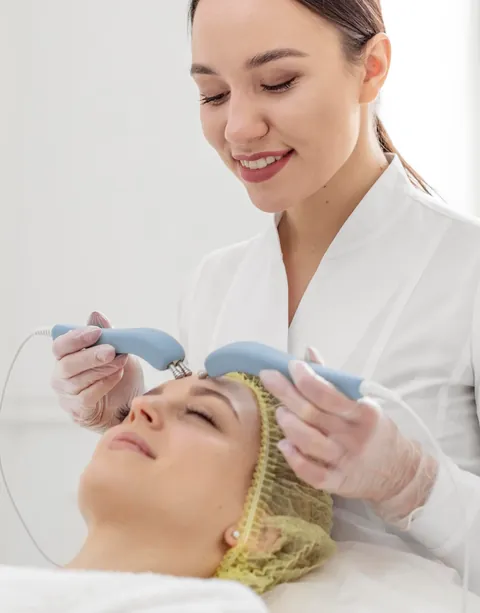
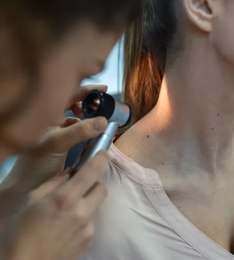
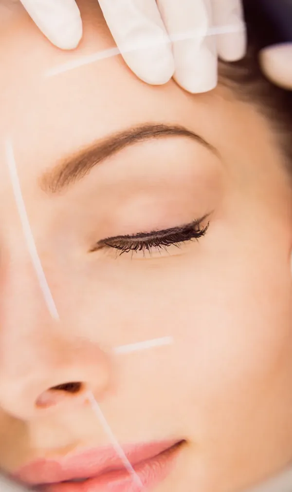
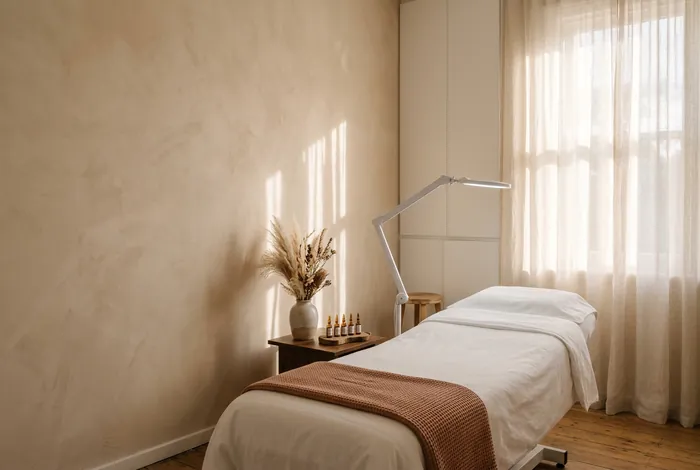
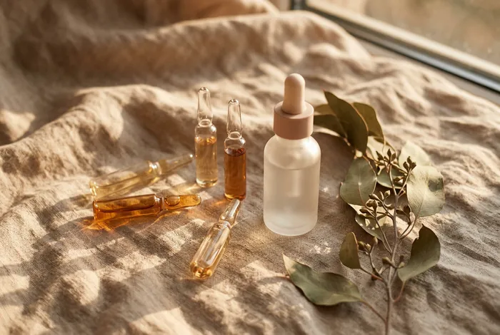

Firmeza
Radiofrequência
Aquece a derme para estimular colágeno. Sessões de 40 minutos, sem tempo de recuperação.
Marcar avaliação
Dermatologia estética · Jardins, São Paulo
Diagnóstico antes de qualquer agulha. Protocolos curtos, revisados a cada retorno, para a pele parecer descansada, não “feita”.
01 · Como pensamos
A primeira consulta dura uma hora e não tem venda de pacote. A dermatologista examina com luz polarizada, fotografa a pele em três ângulos e explica o que está acontecendo por baixo: textura, mancha, flacidez, oleosidade.
Só depois vem o plano, por escrito, com o que fazer agora e o que pode esperar.
Marcar consulta
02 · Tratamentos

Aquece a derme para estimular colágeno. Sessões de 40 minutos, sem tempo de recuperação.
Marcar avaliação
Melasma, poros e cicatrizes de acne, com parâmetros ajustados ao seu fototipo.
Marcar avaliação

Dermatoscopia digital com registro para comparar a cada ano.
Marcar avaliação
Passe o cursor para ver a pele de perto. Toque nos pontos.
03 · Mapa do rosto
Região
Linhas de expressão horizontais e textura fina, que pioram com sol e com o hábito de franzir.
Conteúdo informativo. A indicação real depende da consulta e do exame da sua pele.
Marcar consulta para esta regiãoUltrassom microfocado
04 · Protocolo Tez
Sua rotina, seu histórico, o que você não quer mudar.
Luz polarizada, fotos padronizadas e dermatoscopia.
Prioridades por escrito, com custos e intervalos.
Fotos lado a lado a cada 60 dias para ajustar a rota.

Três salas de procedimento com iluminação regulável, maca aquecida e porta que fecha de verdade. Você troca de roupa sem pressa e sai pelo corredor lateral, sem passar pela recepção.
Marcar consulta05 · Equipe
Dermatologista · CRM-SP 162.418 · RQE 70.115
Dermatologista · laser e tecnologias
Dermatologia clínica · mapeamento de pintas

06 · Em casa
Você sai com uma rotina de três passos, escrita à mão, com marcas de farmácia sempre que possível. Se algo arder, o WhatsApp da equipe responde no mesmo dia.
Marcar consultaContato
Alameda Lorena, 0000 · Jardins · São Paulo
Seg a sex, 9h às 19h · Sáb, 9h às 13h